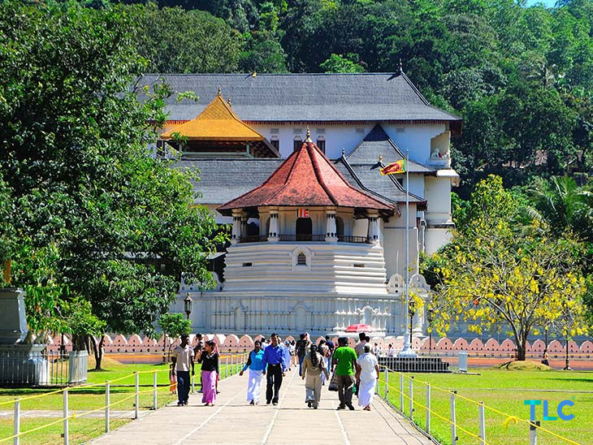
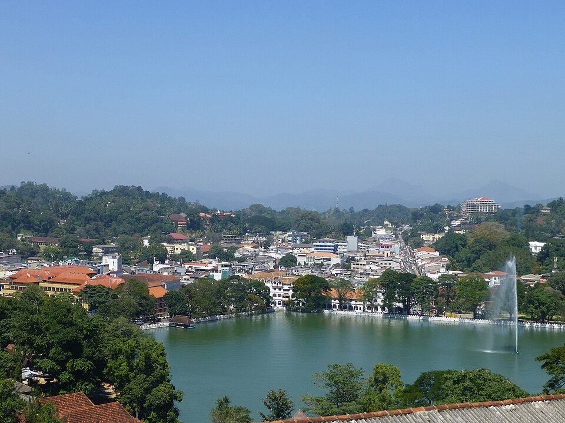
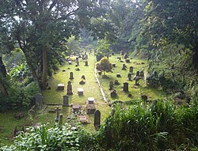

10 Famous Places in Kandy

Temple of the Tooth
One of Sri Lanka's most important cultural and religious landmarks.

Kandy Lake
A scenic lake located beside the historic Temple of the Tooth.

Royal Botanical Gardens
A beautiful botanical garden famous for its tropical plants and landscapes.

Bahirawakanda Temple
Famous for its large Buddha statue and panoramic views of Kandy.

Udawattakele Forest Reserve
A peaceful forest reserve located above the historic city of Kandy.

Kandy Esala Perahera
A world-famous cultural procession featuring traditional dancers and performers.

Embekke Temple
Historic temple renowned for its beautiful traditional wood carvings.

Lankatilaka Temple
A historic Buddhist temple with impressive architecture and hilltop views.

Gadaladeniya Temple
An ancient temple known for its distinctive architecture and history.

Ceylon Tea Museum
Discover the history and production of Sri Lanka's famous Ceylon Tea.